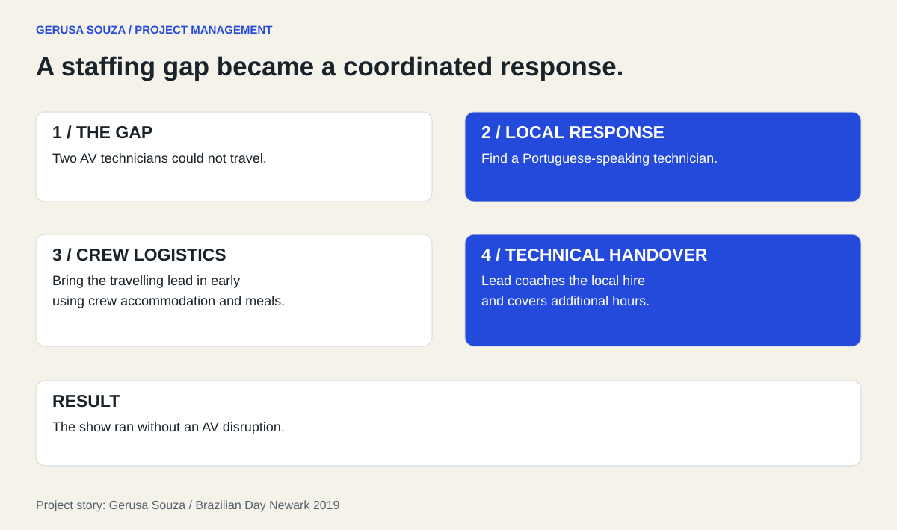
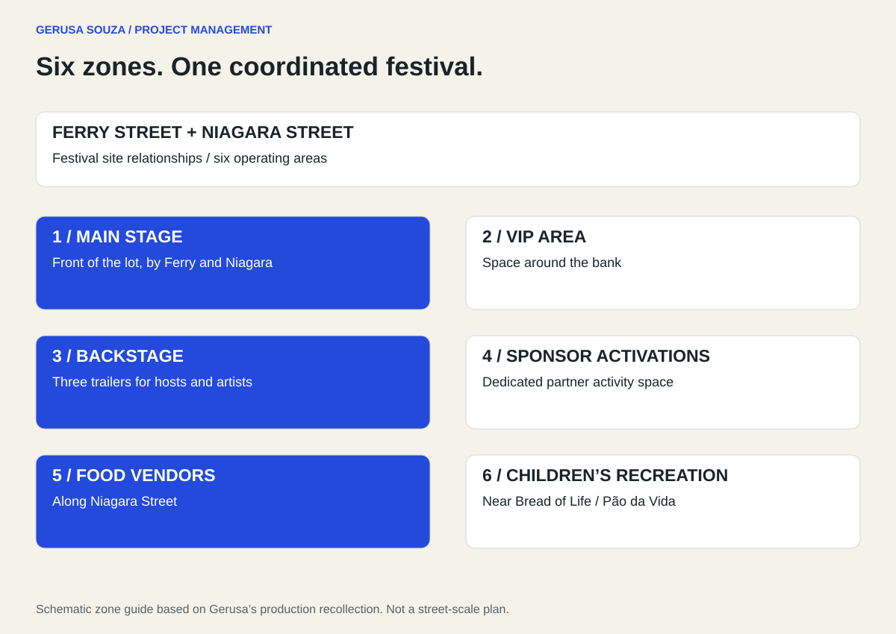
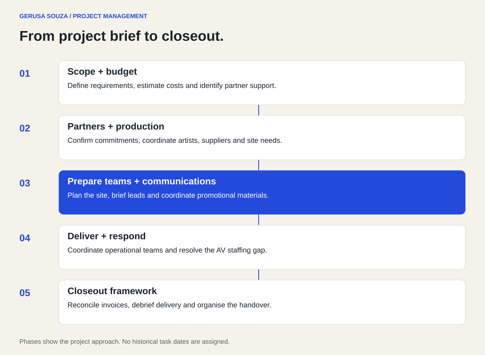

Objective
Plan, organise and deliver a music festival for Newark’s Brazilian community.
NEWARK / COMMUNITY FESTIVAL / 2019
A project management case in budget coordination, partners, site operations and an AV staffing contingency.
Brazilian Day Newark / Project managementPlan, organise and deliver a music festival for Newark’s Brazilian community.
Budget and partner coordination, production, outreach, team preparation and on-site delivery.
A street-festival environment connecting artists, operational teams, sponsors and community audiences.
Two AV technicians could not travel. With artists coming from Brazil, I needed Portuguese-speaking technical coverage.
I found a local technician through Newark’s Brazilian community. Crew accommodation and meals gave me room to bring the travelling lead in early. The lead coached the local hire and covered additional hours.
The show ran without an AV disruption.


Connect artists, hosts, technical teams and three backstage trailers.
Coordinate VIP space and sponsor activation areas.
Connect food vendors, children’s recreation and public-facing operations.

Align commitments and benefits with the production budget.
Translate the show plan into site requirements and briefings.
Coordinate promotional clips and revisions with Record.
The AV staffing response preserved Portuguese-language technical coverage and kept the show running without an AV disruption. It connected contingency planning, local relationships, accommodation and team handover.